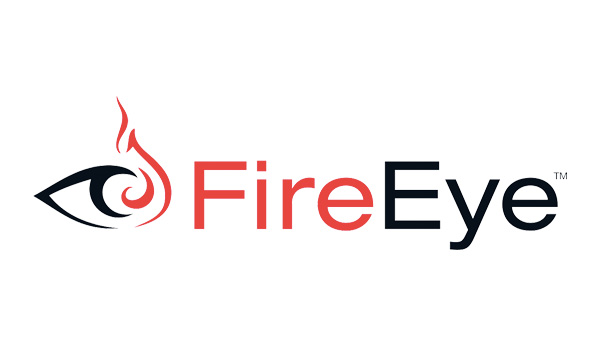

|
Co-Author USA Patent |
System and Method for Detecting CyberAttacks Impersonating Legitimate Sources – 20060101(kraken) |
|
Co-Author USA Patent In Progress with Legal Attorney |
ML based Phishing Detection Engine based on URL & HTML Models |
|  |
Provided services to leading infosec platform(with 4.4 gartner rating) |
Ranging from Drive-by detection, Phishing detection, IDS/IPS(Snort, different AV vendors) |
|
SAAS Solutions |
AWS stack to handle millions of urls daily using numerous aws services e.g S3, Cloudwatch, Elasticcache, CFT, lambdas |
|
Competitive Lab |
Amulgamation of hardware & software setup to evaluate current understanding one AV product |
|
In house IDS Solution |
Took initiative to capture worldwide malicious http traffic capturing with a target of Zero Day attacks, which eventuallly covered the gap |
 |
DevOps and DevSecOps |
Execution of various projects with standard CICD guidelines |
|
Pentesting |
Web Application & APIs white & blackbox pentesting |
|
Data driven network monitoring |
This state of the art technique beats almost all IDS/IPS market solutions, works well with encrypted traffic as well |
|
Vulnerability research and management |
Vulnerability/CVE hunting in not just applications or gateways but in the core protocol stack and proactive coverage |